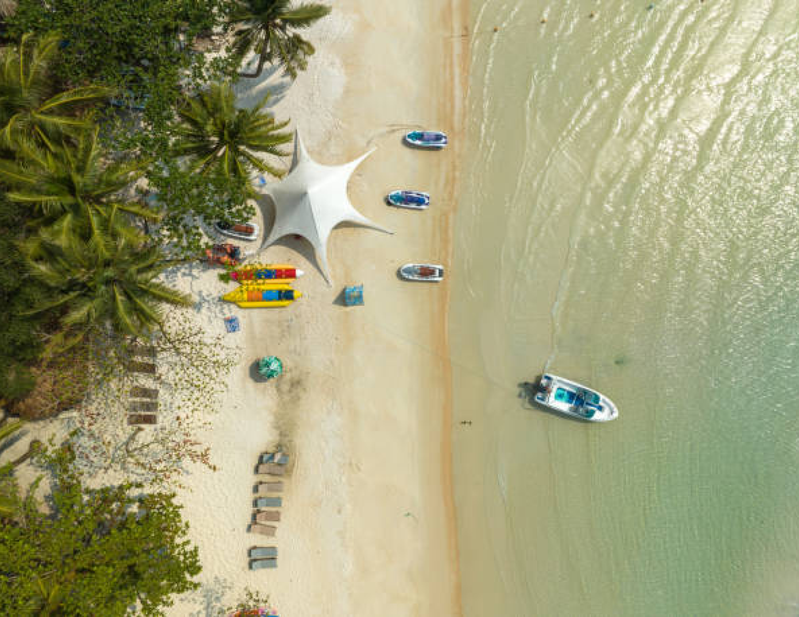
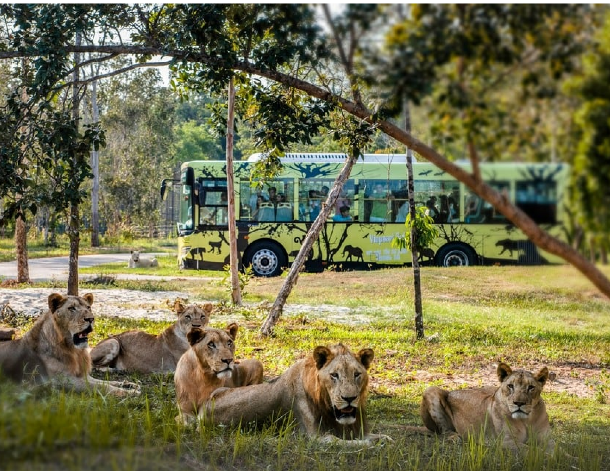
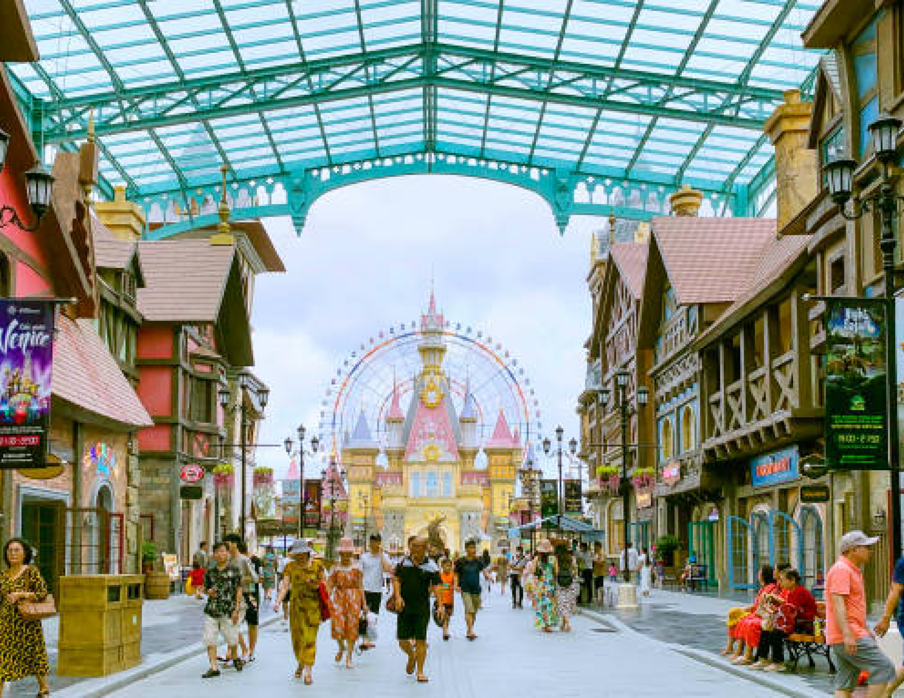
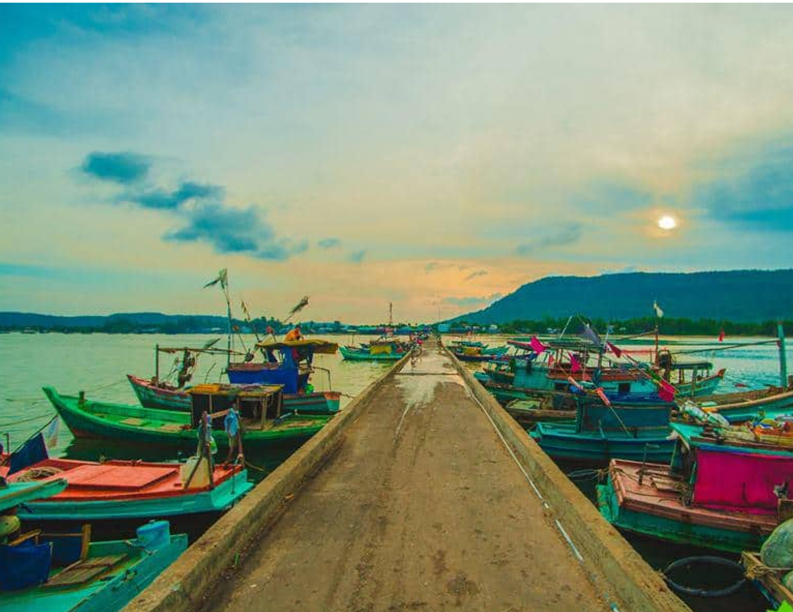
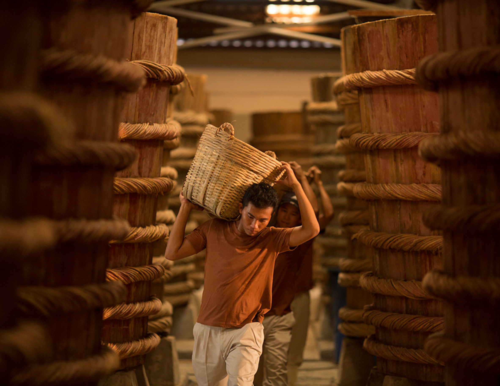

PHU QUOC
PHU QUOC
Phu Quoc is Vietnam's largest island, located in the Gulf of Thailand, known for its pristine beaches, crystal-clear waters, and lush tropical landscapes. A popular destination for both relaxation and adventure, Phu Quoc offers a wide range of activities, from snorkeling and diving to exploring its vibrant local markets and historical sites like the Phu Quoc Prison. The island is also famous for its production of high-quality fish sauce and pepper. With its combination of natural beauty, cultural richness, and luxury resorts, Phu Quoc has become one of Southeast Asia's premier travel destinations.
UNMISSABLE ATTRACTIONS

bai sao
Bai Sao is one of the most stunning beaches on Phu Quoc Island, known for its powdery white sand,
crystal-clear turquoise waters, and peaceful ambiance. Located on the southeast coast of the island,
Bai Sao offers a tranquil escape for visitors looking to relax and unwind in a beautiful natural
setting. The gentle waves and shallow waters make it perfect for swimming, while the surrounding
palm trees add to its tropical charm. Bai Sao is a must-visit destination for beach lovers seeking
serenity on Phu Quoc.
Adress:
Bai Sao, Phu Quoc, Kien Giang
vinpearl Safari
Vinpearl Safari Phu Quoc is the largest wildlife conservation park in Vietnam, offering visitors a
unique experience of seeing rare and endangered species in their natural habitats. The park spans
hundreds of hectares, featuring animals from all over the world, including lions, giraffes, and
zebras. Guests can explore the safari on specially designed vehicles, getting up close to these
magnificent creatures. With its commitment to animal welfare and conservation education, Vinpearl
Safari provides both an entertaining and educational experience for all ages.
Adress:
Ganh Dau, Phu Quoc, Kien Giang.


VinWonders
VinWonders Phu Quoc is a massive theme park offering fun for all ages, with thrilling rides, water
slides, enchanting shows, and immersive experiences. Its beautifully themed zones make it ideal for
families and adventure seekers. Explore diverse attractions and create unforgettable memories in
this top-tier amusement park.
Adress:
Bai Dai, Phu Quoc, Kien Giang
hon thom
Hon Thom is a beautiful island off the coast of Phu Quoc, known for its crystal-clear waters, white
sandy beaches, and vibrant coral reefs. It’s a popular destination for snorkeling, diving, and other
water sports. Visitors can reach Hon Thom via the world’s longest oversea cable car ride, offering
breathtaking views of the surrounding islands and ocean. With its pristine nature and exciting
activities, Hon Thom is a must-visit spot for anyone traveling to Phu Quoc.
Adress:
Hon Thom, Phu Quoc, Kien Giang.


HAM NINH FISHING VILLAGE
Ham Ninh Fishing Village, on the eastern side of Phu Quoc, is known for its traditional lifestyle
and fresh seafood. The village features stilted wooden houses and offers a glimpse into local
fishermen's routines. Visitors can enjoy the peaceful atmosphere, explore markets, and savor fresh
seafood, especially the famous crab dishes. It's an ideal spot for an authentic cultural experience
on Phu Quoc Island.
Adress:
Ham Ninh, Phu Quoc, Kien Giang.
Fish Sauce Factory
Fish Sauce Factory in Phu Quoc is a must-visit for those interested in traditional Vietnamese
culture. Visitors can explore the ancient craft of fish sauce production, where fresh fish is
fermented in large wooden barrels for months to develop its unique flavor. The process showcases
time-honored techniques and offers insight into the heritage of this essential condiment.
Adress:
Duong Dong, Phu Quoc, Kien Giang, Vietnam.

HIDDEN GEMS OF HANOI

PHU QUOC - VINPEARL - NAM DAO - DONG DAO - CANO 4 DAO
4 days
Availability : Every day
1 people